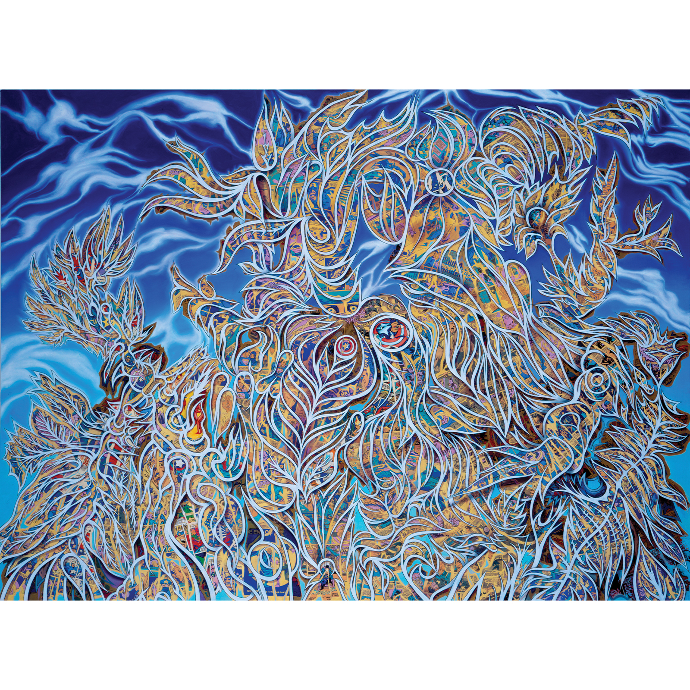
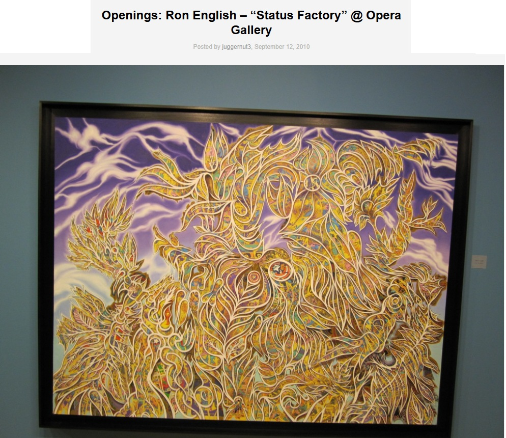
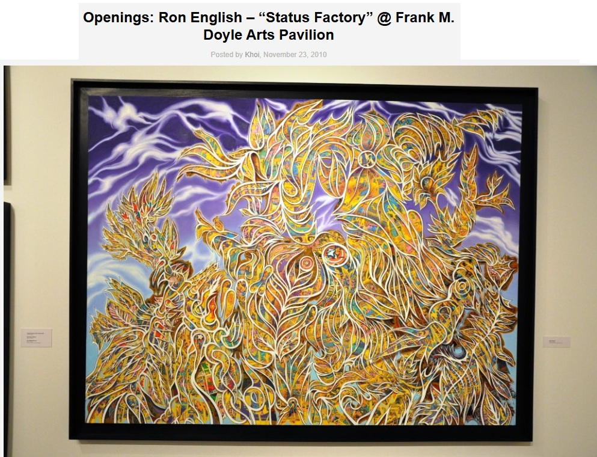

Exhibitions
The ADAM and RON Show, Elms Lesters Painting Rooms, London, UK, May 3–30, 2008.
Status Factory, Opera Gallery, New York, New York, US, September 12–October 29, 2010.
Status Factory – The Art of Ron English, Frank M. Doyle Arts Pavilion (Orange Coast College), Costa Mesa, California, US, November 12–December 17, 2010.
Literature
Elms Lesters Painting Rooms, The Adam and Ron Show (London: Elms Lesters Painting Rooms, 2008), exhibition catalogue / book.
Ron English, Status Factory: The Art of Ron English (San Francisco: Last Gasp of San Francisco, 2014), p. 39. ISBN 978-0867197891.
Ancillary Documentation


